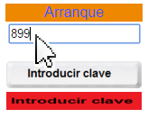

|
|
Este es un simulador de un reactor nuclear de agua a presión PWR. Para poner en marcha el reactor se necesita una clave
que hay que introducir en el recuadro y, posteriormente, pulsar el botón. si la clave es correcta se tendrá acceso a los diferentes controles del reactor.

|